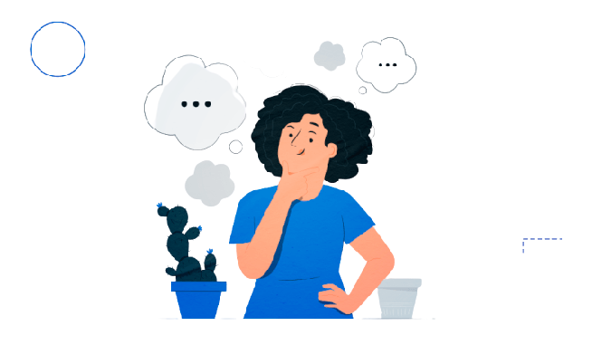

Competências Sócio Emocionais do Profissional de TI
Comunicação
Um profissional de desenvolvimento de sistemas precisa ser capaz de se comunicar de forma clara e eficiente com clientes, colegas de equipe e gestores. A comunicação adequada ajuda a evitar mal-entendidos e a garantir que o produto final atenda às expectativas do cliente.
Trabalho em equipe
O desenvolvimento de sistemas geralmente envolve uma equipe de profissionais com habilidades e conhecimentos diferentes. Um bom profissional de desenvolvimento de sistemas deve ser capaz de colaborar com os membros da equipe, compartilhar ideias, solucionar problemas e alcançar metas comuns.
Pensamento crítico
O desenvolvimento de sistemas requer habilidades de pensamento crítico, especialmente na resolução de problemas complexos. Um profissional de desenvolvimento de sistemas eficaz deve ser capaz de analisar problemas, identificar soluções viáveis e avaliar as vantagens e desvantagens de cada uma.
Criatividade
A criatividade é uma habilidade fundamental para desenvolver soluções inovadoras e eficazes. Um profissional de desenvolvimento de sistemas deve ser capaz de pensar fora da caixa, propor ideias novas e diferentes e apresentar soluções criativas para problemas complexos.
Tolerância à frustração
O desenvolvimento de sistemas pode ser um processo longo e complexo, que pode ser frustrante em alguns momentos. Um profissional de desenvolvimento de sistemas deve ser capaz de lidar com a pressão e o estresse, perseverar em situações desafiadoras e superar obstáculos.